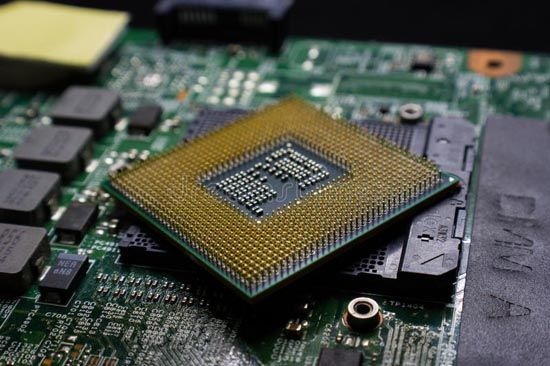
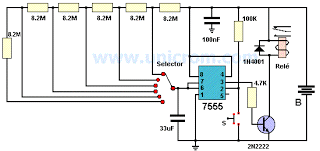

3.1 Chip Set.
El "chipset" es el conjunto (set) de chips que se encargan de controlar determinadas funciones del ordenador, como la forma en que interacciona el microprocesador con la memoria o la caché, o el control de puertos PCI, AGP, USB.
Se identifica usualmente por las iniciales de la compañía fabricante.
Ejemplo: Intel, VIA, SIS, ALI, VLSI y ETEQ.
Antiguamente estas funciones eran relativamente sencillas de realizar, por lo que el chipset era el último elemento al que se concedía importancia a la hora de comprar una placa base, si es que alguien se molestaba siquiera en informarse
sobre la naturaleza del mismo. Sin embargo, la llegada de micros más complejos, además de nuevas tecnologías en memorias y caché, le ha hecho cobrar protagonismo.}
El Chipset está compuesto por dos microprocesadores:
- El North Bridge o MCH (Memory Controller Hub) (puente norte)
- El South Bridge o ICH (Input output Controller Hub) (puente sur)
La función de este chip es en dos partes las cuales de denominan norte y sur:
- El lado norte se encarga de controlar los dispositivos de almacenamiento y demás periféricos que tienen dentro del CPU una velocidad de transferencia de datos menor.
- El lado sur se encarga de los dispositivos como la comunicación con las tarjetas de expansión y demás chips que requieren una mayor velocidad de transferencia de datos.
- De la calidad y características del chipset dependerán:
- Obtener o no el máximo rendimiento del microprocesador.
- Las posibilidades de actualización del ordenador
El uso de ciertas tecnologías más avanzadas de memorias y periféricos.
El chipset también controla el funcionamiento de las tarjetas integradas que posee la tarjeta madre (tarjeta de video, sonido y red) por lo tanto también debe instalarse sus respectivos drivers para que se active u optimice su funcionamiento.
Estos drivers también vienen en el CD de instalación de la tarjeta madre.

3.1.1 Unidad Central de Procesamiento (CPU).
La unidad central de procesamiento o CPU (por el acrónimo en inglés de central processing unit), o simplemente el procesador o microprocesador, es el componente del computador y otros dispositivos programables, que interpreta las instrucciones contenidas
en los programas y procesa los datos. Los CPU proporcionan la característica fundamental de la computadora digital (la programabilidad) y son uno de los componentes necesarios encontrados en las computadoras de cualquier tiempo, junto con
el almacenamiento primario y los dispositivos de entrada/salida.
conoce como microprocesador el CPU que es manufacturado con circuitos integrados. Desde mediados de los años 1970, los microprocesadores de un solo chip han reemplazado casi totalmente todos los tipos de CPU, y hoy en día, el término
"CPU" es aplicado usualmente a todos los microprocesadores.
3.1.2 Controlador del Bus.
El Bus es la vía a través de la que se van a transmitir y recibir todas las comunicaciones, tanto internas como externas, del sistema informático. El bus es solamente un Dispositivo de Transferencia de Información entre los componentes conectados
a él, no almacenainformación alguna en ningún momento. Los datos, en forma de señal eléctrica, sólo permanecen en el bus el tiempo que necesitan en recorrer la distancia entre los dos componentes implicados en la transferencia. En una unidad
central de Bus de sistema típica el bus se subdivide en tres buses o grupos de líneas: Bus de Control. Bus de Datos. Direcciones.
Bus de Direcciones
Es un canal de comunicaciones constituido por líneas que apuntan a la dirección de memoria que ocupa o va a ocupar la información a tratar. Una vez direccionada la posición, la información, almacenada en la memoria hasta ese momento,
pasará a la CPU a través del bus de datos. Para determinar la cantidad de memoria directamente accesible por la CPU, hay que tener en cuenta el número de líneas que integran el bus de direcciones, ya que cuanto mayor sea el número de líneas,
mayor será la cantidad de direcciones y, por tanto, de memoria a manejar por el sistema informático.
Bus de Datos
El bus de datos es el medio por el que se transmite la instrucción o dato apuntado por el bus de direcciones. Es usado para realizar el intercambio de instrucciones y datos tanto internamente, entre los diferentes componentes del sistema
informático, como externamente, entre el sistema informático y los diferentes subsistemas periféricos que se encuentran en el exterior, una de las características principales de una computadora es el número de bits que puede transferir el
bus de datos (16, 32, 64, etc.). Cuanto mayor sea este número, mayor será la cantidad de información que se puede manejaral mismo tiempo.
Bus de Control
Es un número variable de líneas a través de las que se controlan las unidades complementarías. El número de líneas de control dependerá directamente de la cantidad que pueda soportar el tipo de CPU utilizada y de su capacidad de direccionamiento
de información.
3.1.3 Puertas de Entrada Salida E/S.
En computación, entrada/salida, también abreviado E/S o I/O (del original en inglés input/output), es la colección de interfaces que usan las distintas unidades funcionales (subsistemas) de un sistema de procesamiento de información para comunicarse
unas con otras, o las señales (información) enviadas a través de esas interfaces. Las entradas son las señales recibidas por la unidad, mientras que las salidas son las señales enviadas por ésta. El término puede ser usado para describir una
acción; "realizar una entrada/salida" se refiere a ejecutar una operación de entrada o de salida.
Los dispositivos de E/S los usa una persona u otro sistema para comunicarse con una computadora. De hecho, a los teclados y ratones se
los considera dispositivos de entrada de una computadora, mientras que los monitores e impresoras son vistos como dispositivos de salida de una computadora. Los dispositivos típicos para la comunicación entre computadoras realizan las dos
operaciones, tanto entrada como salida, y entre otros se encuentran los módems y tarjetas de red. Es importante notar que la designación de un dispositivo, sea de entrada o de salida, cambia al cambiar la perspectiva desde el que se lo ve.
Los teclados y ratones toman comoentrada el movimiento físico que el usuario produce como salida y lo convierten a una señal eléctrica que la computadora pueda entender. La salida de estos dispositivos son una entrada para la computadora.
De manera análoga, los monitores e impresoras toman como entrada las señales que la computadora produce como salida. Luego, convierten esas señales en representaciones inteligibles que puedan ser interpretadas por el usuario.
3.1.4 Controlador de Interrupciones.
un controlador programable de interrupciones o PIC (Programmable Interrupt Controller) es un dispositivo usado para combinar varias fuentes de interrupciones sobre una o más líneas del CPU, mientras que permite que los niveles de prioridad sean asignados
a sus salidas de interrupción (no confundir con el microcontrolador PICmicro de Microchip Technology). Cuando el dispositivo tiene múltiples salidas de interrupción a imponer, las impondrá en orden de su prioridad relativa. Los modos comunes
de un PIC incluyen prioridades duras, prioridades rotativas, y prioridades en cascada.
3.1.5 Controlador de Acceso Directo a Memoria. . (DMA).
El acceso directo a memoria (DMA, del inglés direct memory access) permite a cierto tipo de componentes de una computadora acceder a la memoria del sistema para leer o escribir independientemente de la unidad central de procesamiento (CPU). Muchos sistemas
hardware utilizan DMA, incluyendo controladores de unidades de disco, tarjetas gráficas y tarjetas de sonido. DMA es una característica esencial en todos los ordenadores modernos, ya que permite a dispositivos de diferentes velocidades comunicarse
sin someter a la CPU a una carga masiva de interrupciones.
Una transferencia DMA consiste principalmente en copiar un bloque de memoria de un dispositivo a otro. En lugar de que la CPU inicie la transferencia, la transferencia se lleva a cabo por el controlador DMA. Un ejemplo típico es mover
un bloque de memoria desde una memoria externa a una interna más rápida. Tal operación no ocupa al procesador y, por ende, éste puede efectuar otras tareas. Las transferencias DMA son esenciales para aumentar el rendimiento de aplicaciones
que requieran muchos recursos.
3.1.6 Circuitos de temporización.
El temporizador es un circuito digital, dispone de dos salidas al igual que un flip flop, una salida es la inversa de la otra, a diferencia del flip flop quién cuenta con dos estados estables, el temporizador solamente posee un estado estable, el otro
estado es inestable, permanece en su estado estable, hasta que se activa con un pulso de entrada, una vez que se activa cambia a su estado inestable y ahí permanece por un periodo fijo de tiempo tw , este tiempo lo determina una constante
de tiempo RC externa que se conecta al temporizador, después de que transcurre el tiempo tw , las salidas dos salidas del temporizador regresan a su estado estable, hasta que se activan otra vez.
La finalidad de la temporización es retardar el paso de una señal desde un nodo del circuito hasta otro punto, el diseño de este circuito se realiza con un dispositivo que se conoce con el nombre de “monoestable” ó “temporizador”,
éste elemento electrónico dispone de una entrada “E” y una salida “S”, se tienen tres temporizadores básicos que se denominan; el primero, temporización a la activación, el segundo se llama temporización a la desactivación y el tercero es
una combinación de las dos anteriores, temporización a la “activación y desactivación” simultaneas. Se dispone de dos tipos de comportamiento en que se manifiestan las salidas de los temporizadores, "redisparables" y "no redisparables" y su
entrada responde a dos tipos de disparo, "activación" y "desactivación"

3.1.7 Circuitos de Control.
Un circuito de control es el componente fundamental de los sistemas de control industrial. Se refiere a todos los componentes físicos y funciones de control necesarios para ajustar automáticamente el valor de una variable de proceso medida (PV)
para igualar el valor de un punto de ajuste deseado (SP). Incluye el sensor de proceso, la función del controlador y el elemento de control final (FCE) que se requieren para el control automático.
3.2 Aplicaciones.
3.2.1 Entrada/Salida.
Tanto en la E/S programada como la basada en interrupciones, la CPU debe encargarse de la transferencia de datos una vez que sabe que hay datos disponibles en el controlador. Una mejora importante para incrementar la concurrencia entre la CPU
y la E/S consiste en que el controlador del dispositivo se pueda encargar de efectuar la transferencia de datos, liberando de este trabajo a la UCP, e interrumpir a la UCP sólo cuando haya terminado la operación completa de E/S. Esta técnica
se denomina acceso directo a memoria (DMA, Direct Memory Access).
Cuando se utiliza acceso directo a memoria, es el controlador el que se encarga directamente de transferir los datos entre el periférico y la memoria principal, sin requerir intervención alguna por parte del procesador. Esta técnica
funciona de la siguiente manera: cuando el procesador desea que se imprima un bloque de datos, envía una orden al controlador indicándole la siguiente información:
- Tipo de operación: lectura o escritura.
- Periférico involucrado en la operación.
- La dirección de memoria desde la que se va a leer o a la que va a escribir directamente con el controlador de dispositivo (dirección).
- El número de bytes a transferir (contador).
3.2.2 Almacenamiento.
Los dispositivos o unidades de almacenamiento de datos son componentes que leen o escriben datos en medios o soportes de almacenamiento, y juntos conforman la memoria o almacenamiento secundario de la computadora.br
Una computadora tiene almacenamiento primario o principal (RAM y ROM) y secundario o auxiliar. El almacenamiento secundario no es necesario para que arranque una computadora, como unidades de disco duro externo, entre otros.
 3.2.3 Fuentes de Alimentación.
3.2.3 Fuentes de Alimentación.
Los requerimientos de una fuente de alimentación (F.A.) son difíciles de entender. Cuanto más rápido sea un ordenador, mas energía necesitará. Cuantos más periféricos queramos tener en el PC, más potente tendrá que ser nuestra F.A.
La fuente de alimentación de un PC está localizada en una caja herméticamente cerrada y que contiene un conversor hardware de corriente alterna a corriente continua, AC a DC. La entrada normalmente será de 220 V y la salida de 5 a
12 voltios.
Las fuentes de alimentación se encargan de proveer electricidad a los componentes electrónicos del ordenador. Este hardware es esencial ya que sin él, sería imposible que el PC pudiera ni tan siquiera arrancar, por lo que se le considera
crítico cuando tiene una avería o algún problema.
Como se ha dicho, se encuentra dentro de una caja sólida y sellada y usualmente incluye un ventilador para mantener una temperatura ideal.
Se puede encontrar en una esquina de la caja y se puede visualizar desde la parte trasera por la abertura del ventilador para tal uso.
Podemos encontrar dos tipos de fuente de alimentación: AT o ATX. Las fuentes AT son algo más antiguas y menos sofisticadas mientras que las ATX son más modernas y seguras.
Una vez que la fuente de alimentación está debidamente instalada, el ordenador se podrá poner en marcha pulsando un conmutador de encendido/apagado que se encontrará en la parte delantera. Algunos equipos también incluyen un botón para
apagar y encender en la parte trasera.

3.3 Ambientes de Servicio.
El negocio de proveer servicios de datos es mucho más complejo que la forma en la que se dan los tradicionales servicios, que con frecuencia se terminan involucrando o necesitando la colaboración de terceras empresas.
- Desarrollo de nuevos mercados y productos
- Adquisición y administración de clientes
- Proveer y desarrollar servicios para la red
- Administración del negocio
3.3.1 Negocios.
Definitivamente, la tecnología en general ha sido la causa principal y la acción más directa para la transformación del trabajo de las organizaciones en la posguerra del siglo XX. Tanto los bienes de capital «duros» (computadores, teléfonos, videos,
facsímiles, grabadoras, etc.), como los programas y sistemas de información y comunicación en general, han incrementado enormemente la productividad y eficiencia de las organizaciones. Tenemos como ejemplos los siguientes: bases de datos en
redes de todo orden y topología, sistemas de reservaciones en aerolíneas, sistemas de contabilidad y nóminas, archivos clínicos en centros de salud, sistemas de conmutación electrónica y un sin número de otras aplicaciones a procesos administrativos.
3.3.2 Industria.
La industrialización de los servicios de tecnología de información va a redefinir el mercado en términos de como las organizaciones evalúan, compran y seleccionan los servicios y como los vendedores desarrollan y establecen precios de los servicios. Para
lograr esta estandarización, se requiere un enfoque hacia las soluciones genéricas y esto debe ser responsabilidad de los proveedores, que deben de desarrollar, operar y administrar el resultado de estos genéricos de TI. Aunque los servicios
de TI están en proceso de madurez, la madurez de la industria se ha incrementado en aspectos evidentes, como la forma en que los servicios son implementados y administrados.
3.3.3 Comercio Electrónico.
El desarrollo de estas tecnologías y de las telecomunicaciones ha hecho que los intercambios de datos crezcan a niveles extraordinarios, simplificándose cada vez más y creando nuevas formas de comercio, y en este marco se desarrolla el Comercio Electrónico.
Se considera “Comercio Electrónico” al conjunto de aquellas transacciones comerciales y financieras realizadas a través del procesamiento y la transmisión de información, incluyendo texto, sonido e imagen.
Regresar al inicio